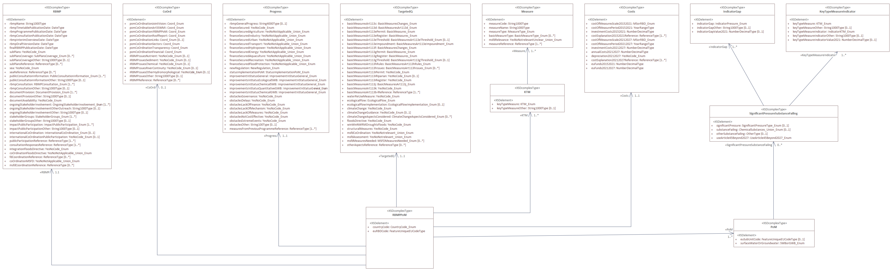
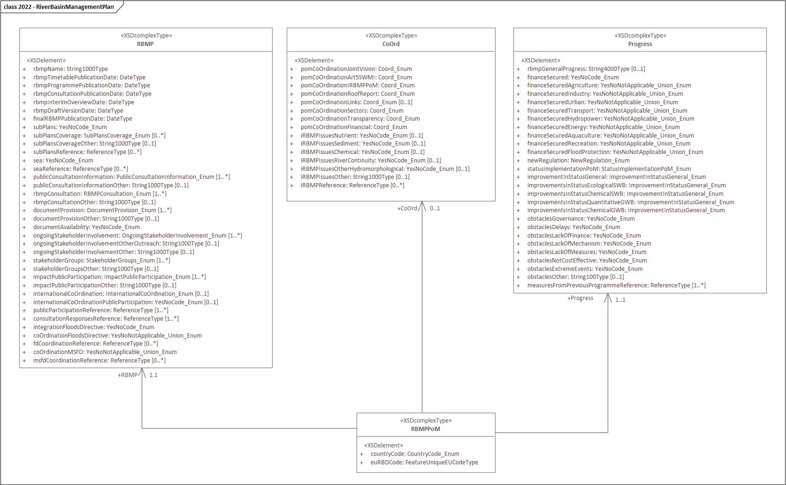

Programme of measures#
Last update: 2026-08-25
Purpose and overview#
This section revises the River Basin Management Plan & Programme of Measures schema used in the 3rd cycle of reporting of the Water Framework Directive River Basin Management Plans. It also presents a proposal for simplifying the electronic reporting in the 4th cycle.
Not all information in the RBMPs can be accurately provided using a common European model. However, it is possible to improve and simplify the reporting of structured data, accepting that part of the relevant information will remain in documentation to be analysed during the Commission’s implementation assessment.
Using this principle, the data model can focus on aspects that are suitable for structured reporting, allowing adequate comparisons between different river basin districts (RBDs). Specific or more detailed information can be kept in the RBMP documents, the analysis of which can in the future be facilitated using, for example, large language models (LLMs) supported by retrieval‑augmented generation (RAG) techniques.
Current structure - 3rd cycle#
The schema used in the 3rd cycle of reporting contained 4 main groups (Figure 25):
summary information about the River Basin Management Plan, the Progress since the previous River Basin Management Plan, and the mechanisms of international Coordination (if applicable)
information about the Programme of Measures, comprising a summary questionnaire of Targeted Questions and aggregated data about the overall Cost of measures
disaggregated information was requested about each Measure and its classification into Key Types of Measures (KTM) and basic type of measures (if applicable)
further information about Significant pressures and substances causing failure, along with their link to KTM Indicators and Indicator Gaps
{kind=link}

Figure 25 River Basin Management Plan & Programme of Measures table - 3rd cycle#
RBMP, Coordination and Progress table - 3rd cycle#
In the 3rd cycle of reporting, this group comprised three tables, collecting summary information about the RBMP, the Progress since the previous RBMP, and the mechanisms of international Coordination, if applicable (Figure 26).
The data is structured as a simple questionnaire, mostly with Yes/No or multiple‑choice answers, accompanied by links to additional documentation (which can be uploaded or kept on national websites). Only one record per table is required for each River Basin District.
Reporting by MS should not present technical difficulties, and there is limited scope for technical simplification. Nevertheless, the Commission has reviewed whether the requested data is strictly required and proposes the simplification detailed in the next sections.
{kind=link}

Figure 26 River Basin Management Plan, international Coordination and Progress - 3rd cycle#
Costs table - 3rd cycle#
Regarding the economic data in the programme of measure, the revision of the electronic reporting focuses on the main issues described in the Note to the CIS Working Group Economics quoted below [1]:
“[…] Both the Commission’s 6th and 7th WFD Implementation Reports indicate persistent problems in the (electronic) reporting on the investments and the costs of other measures in the Programme of Measures (PoM).
The 6th WFD Implementation Report notes that the Member States’ reporting on costs and financing of the PoMs appears overall patchy and that a consultant’s study estimate is an underestimation for the total costs, as there are significant data gaps and it excludes operational and infrastructure maintenance costs. The corresponding investment overview table shows indeed large gaps. [2]
The Commission’s evaluation of the 3rd River Basin Management Plans [3], as part of the 7th WFD Implementation Report, notes that the “third PoMs presented in the (…) RBMPs show that Member States continue to have different approaches to their design and reporting” and that “the costs and the financing of the planned measures are often missing.” Hence, the Commission recommends that “in order to effectively implement the PoMs to develop long‑term investment plans and clearly identifying the source of financing for each measure.” A good planning is also necessary for the acquisition of support from EU Funds, the EIB and other promotional banks.
The challenge is thus to improve the reporting of the costs of the PoM measures, including the investment amounts, and to specify the funding of these investments and other measures. This requires a clear distinction between capital costs (CAPEX) and operational costs (OPEX). […]
The proposal here is to agree on a clear conceptual basis for the PoM costs.
It is natural to consider the PoM as a budget of government outlays – however, there can be costs on other economic agents without government payment involved (cf. banning an activity).
The budget orientation would imply to look at foreseen spending amounts. This has three consequences:
‘Welfare costs’ should not be included in the reporting. However, they can be taken up as “negative benefits” in the CEA (cost‑effectiveness analysis).
The reporting is on investment spending (purchases / commitments) and not on capital costs (depreciation).
To make the link with financial support from EU Funds, EIB and other promotional banks, one needs to distinguish OPEX and CAPEX when reporting investment cost.
There is a readily available conceptual basis for the reporting on the PoM investment and other costs, with which the Member States are already familiar, namely the environmental protection expenditures. They are namely required to collect and report this data annually to Eurostat [4], who publishes the Environmental Protection Expenditures Accounts (EPEA) as one of the environmental‑economic satellite accounts to the economic National Accounts. The EPEA are based on a clear, publicly available protocol (following UN statistical standards), defining the environmental domains, spending economic sectors, and expenditure types. The latter includes the distinction between capital and current expenditures. Hence, it meets the features described in the three bullets points above.
A brief review of the reported data confirms the issues mentioned above.
In the 3rd cycle of reporting, the overall cost of the PoM was reported in the Costs class (Figure 27). Reporting of costs was, de facto, optional – since all numerical attributes admitted the option –9999 to denote “data not available”.
Out of the 146 RBD reported by EU Member States, 24 do not have data on investments, 54 do not have data on operational costs and 64 do not have data on EU funds.
classDiagram
class Costs {
+ costOfMeasuresScale20152021: MSorRBD_Enum
+ costOfMeasurePeriod20152021: YearRangeType
+ investmentCosts20152021: NumberDecimalType
+ costExplanation20152021Reference: ReferenceType [1..*]
+ costOfMeasuresScale20212027: MSorRBD_Enum
+ costOfMeasurePeriod20212027: YearRangeType
+ investmentCosts20212027: NumberDecimalType
+ annualCosts20212027: NumberDecimalType
+ depreciation20212027: YesNoCode_Enum
+ costExplanation20212027Reference: ReferenceType [1..*]
+ euFunds20152021: NumberDecimalType
+ euFunds20212027: NumberDecimalType
}
Figure 27 Class diagram for the RBMPPoM_2022 schema: Costs – 3rd cycle#
The variability of the geographical and temporal coverage of the reported data adds to the difficulty in achieving a meaningful analysis. Table 21 illustrates the issues regarding temporal coverage. Table 22 illustrates the issue with geographical coverage.
costOfMeasurePeriod20152021 |
costOfMeasurePeriod20212027 |
Number of RBDs |
|---|---|---|
2014–2020 |
2022–2027 |
5 |
2015–2020 |
2021–2027 |
1 |
2015–2020 |
2022–2027 |
2 |
2015–2021 |
2007–2027 |
1 |
2015–2021 |
2021–2027 |
62 |
2015–2021 |
2022–2027 |
23 |
2016–2021 |
2009–2015 |
1 |
2016–2021 |
2010–2015 |
7 |
2016–2021 |
2021–2027 |
4 |
2016–2021 |
2022–2027 |
40 |
2016–2021 |
2023–2027 |
3 |
2016–2022 |
2023–2027 |
4 |
2016–2027 |
2019 |
4 |
2017–2021 |
2021–2027 |
4 |
2017–2021 |
2022–2027 |
1 |
costOfMeasuresScale20152021 |
costOfMeasuresScale20212027 |
Number of RBDs |
|---|---|---|
National |
National |
48 |
River Basin District |
River Basin District |
103 |
National |
River Basin District |
4 |
River Basin District |
National |
7 |
Proposed structure - 4th cycle#
The former RBMP and Coordination tables are simplified to a single
RiverBasinManagementPlantable, containing a selected subset of attributes.The
Progresstable is modified to request only aggregated information about the overall status of the measures of the previous cycle (3rd cycle).The reporting of the Programme of Measures is also simplified. The
TargetedQuestionstable, containing the questionnaire at RBD level, is simplified.Information about measures is requested in a single
Measuretable.The former Costs table is removed. Information about the planned
ExpenditurePerMeasureis reported in a separate table, if data is available.The KTM classification, KTM indicators and indicator gaps data is completely removed.
---
config:
class:
hideEmptyMembersBox: true
layout: dagre
theme: neutral
---
classDiagram
direction TB
class dcMetadata{<<documents>>}
class Reference{<<documents>>}
class Document {<<documents>>}
class RiverBasinManagementPlan{<<descriptive>>}
class Progress{<<descriptive>>}
class TargetedQuestions{<<descriptive>>}
class Measure{<<descriptive>>}
class ExpenditurePerMeasurePerSector{<<descriptive>>}
dcMetadata ..> Document
Reference ..> Document
RiverBasinManagementPlan ..> Reference
Measure ..> Reference
Measure "1" -- "0..n" ExpenditurePerMeasurePerSector
classDef default fill:white,stroke:#000;
classDef forFixing fill:white,stroke:#f00;
Figure 28 Programmes of measures dataflow - overview - 4th cycle#
Descriptive dataset - 4th cycle#
RiverBasinManagementPlan table#
The simplified RiverBasinManagementPlan table contains a subset of the data previously requested
in the RBMP and Coordination classes in the 3rd cycle
(Figure 29):
The new
coordinationNRRReferenceattribute allows the reporting of information related to coordination with the Nature Restoration Regulation.The
pomCoordinationArt5SWMI,pomCoordinationIRBMPPoM,pomCoordinationRoofReportandpomCoordinationFinancialattributes are only required for international RBDs.
---
config:
class:
hideEmptyMembersBox: true
layout: dagre
theme: neutral
---
classDiagram
direction TB
class RiverBasinManagementPlan{
+ euRBDCode: wiseIdentifier
+ rbmpName: string1000
+ rbmpTimetablePublicationDate: date
+ rbmpProgrammePublicationDate: date
+ rbmpConsultationPublicationDate: date
+ rbmpInterimOverviewDate: date
+ rbmpDraftVersionDate: date
+ finalRBMPPublicationDate: date
+ subPlans: YesNo
+ subPlansCoverage: SubPlansCoverage [0..1]
+ subPlansReference: referenceCode [0..n]
+ sea: YesNo
+ seaReference: referenceCode [0..n]
+ documentAvailability : YesNo
+ ongoingStakeholderInvolvement: OngoingStakeholderInvolvement [0..n]
+ stakeholderGroups: StakeholderGroups [0..n]
+ internationalCoordination: InternationalCoordination [0..n]
+ internationalCoordinationPublicParticipation: YesNo [0..1]
+ pomCoordinationArt5SWMI: Coordination
+ pomCoordinationIRBMPPoM: Coordination
+ pomCoordinationRoofReport: Coordination
+ pomCoordinationFinancial: Coordination
+ integrationFloodsDirective: YesNo
+ coordinationFloodsDirective: YesNoNotApplicable
+ coordinationMSFD: YesNoNotApplicable
+ coordinationNRRReference: referenceCode [1..n]
}
class Coordination{
<<enumeration>>
withEUMemberStates
withCountriesOutsideEU
both
none
}
class InternationalCoordination{
<<enumeration>>
internationalAgreement
permanentCooperationBody
internationalRBMP
noFormalisedCoordination
}
class OngoingStakeholderInvolvement{
<<enumeration>>
regularExhibitions
establishmentOfAdvisoryGroups
involvementInDrafting
otherOutreachActivities
formationOfAlliances
other
}
class SubPlansCoverage{
<<enumeration>>
agriculture
chemicalIndustry
chemicalPollution
climateChange
coastalErosion
hydropower
nutrientEnrichment
ruralPlanning
transport
urbanPlanning
waterScarcityAndDroughts
other
}
class StakeholderGroups{
<<enumeration>>
waterSupplyAndSanitation
agricultureFarmers
hydropowerAndEnergy
navigationPorts
fisheriesAndAquaculture
industry
ngosNatureProtection
consumerGroups
localAndRegionalAuthorities
other
}
RiverBasinManagementPlan ..> SubPlansCoverage
RiverBasinManagementPlan ..> OngoingStakeholderInvolvement
RiverBasinManagementPlan ..> Coordination
RiverBasinManagementPlan ..> InternationalCoordination
RiverBasinManagementPlan ..> StakeholderGroups
classDef default fill:white,stroke:#000;
classDef forFixing fill:white,stroke:#f00;
Figure 29 River Basin Management Plan table – 4th cycle#
Progress table#
The Progress table is modified to provide an
overview of the proportion of the measures of the 3rd RBMPs
that were executed, cancelled, or otherwise affected,
as well as the obstacles encountered during the implementation
of the 3rd RBMP Programme of Measures (Figure 30).
The only constraint is that, for each RBD,
the sum of the values in percentageInStatus must be 100.
The level of detail can be adapted depending on the needs and the data available at national level.
---
config:
class:
hideEmptyMembersBox: true
layout: dagre
theme: neutral
---
classDiagram
direction TB
class Progress{
+ euRBDCode: wiseIdentifier
+ previousRBMPMeasureStatus: PlannedOngoingExecutedCancelled
+ percentageInStatus: Percentage
+ obstaclesGovernance: YesNo
+ obstaclesDelays: YesNo
+ obstaclesLackOfFinance: YesNo
+ obstaclesLackOfMechanism: YesNo
+ obstaclesMeasureNotEffective: YesNo
+ obstaclesMeasureNotCostEffective: YesNo
+ obstaclesExtremeEvents: YesNo
}
class PlannedOngoingExecutedCancelled{
<<enumeration>>
planned
ongoing
executed
cancelled
}
Progress ..> PlannedOngoingExecutedCancelled
classDef default fill:white,stroke:#000;
classDef forFixing fill:white,stroke:#f00;
Figure 30 Progress table – 4th cycle#
A numerical example illustrates the proposed approach. Consider a hypothetical 3rd RBMP Programme of Measures with 10 different measures, which are in different statuses and may have faced different obstacles (Table 23).
Measure |
Status |
Obstacles |
|---|---|---|
M01 |
Ongoing |
No obstacles. |
M02 |
Executed |
No obstacles. |
M03 |
Executed |
No obstacles. |
M04 |
Executed |
Extreme event. |
M05 |
Executed |
Extreme event. |
M06 |
Cancelled |
Extreme event. |
M07 |
Cancelled |
Extreme event. |
M08 |
Postponed to the next cycle |
Delays, Lack of finance. |
M09 |
Postponed to the next cycle |
Delays, Lack of finance. |
M10 |
Cancelled |
Not cost effective. |
The example in Table 24 illustrates how to synthesize the information in the Progress table.
previousRBMPMeasureStatus |
percentageInStatus |
obstaclesDelays |
obstaclesLackOfFinance |
obstaclesMeasureNotCostEffective |
obstaclesExtremeEvents |
|---|---|---|---|---|---|
ongoing |
10 |
No |
No |
No |
No |
executed |
20 |
No |
No |
No |
No |
executed |
20 |
No |
No |
No |
Yes |
cancelled |
20 |
No |
No |
No |
Yes |
planned |
20 |
Yes |
Yes |
No |
No |
cancelled |
10 |
No |
No |
Yes |
No |
TargetedQuestions table#
The TargetedQuestions table collects summary information about the measures in the RBMP,
and the progress since the previous cycle. For each RBMP, only one record is required.
The data is structured as a simple questionnaire, with Yes/No or multiple-choice answers.
Reporting by MS should not present technical difficulties,
and there is limited scope for any technical simplification.
The Commission has revised and simplified the TargetedQuestions table,
keeping a subset of the questions requested in the previous cycle
(Figure 31).
---
config:
class:
hideEmptyMembersBox: true
layout: dagre
theme: neutral
---
classDiagram
direction TB
class TargetedQuestions{
+ euRBDCode: wiseIdentifier
+ basicMeasuresArt113c: MeasuresChanges
+ basicMeasuresArt113d: BasicMeasuresArt113d
+ basicMeasuresArt113ePermit: MeasureScope
+ basicMeasuresArt113eRegister: MeasureScope
+ basicMeasuresArt113eThreshold: BasicMeasuresArt113eThreshold
+ basicMeasuresArt113eImpoundment: BasicMeasuresArt113eImpoundment
+ basicMeasuresArt113f: MeasuresChanges
+ basicMeasuresArt113gPermit: MeasureScope
+ basicMeasuresArt113gRegister: MeasureScope
+ basicMeasuresArt113gThreshold: BasicMeasuresArt113gThreshold
+ basicMeasuresArt113hRules: BasicMeasuresArt113hRules
+ basicMeasuresArt113iPermit: YesNo
+ basicMeasuresArt113iRegister: YesNo
+ basicMeasuresArt113j: BasicMeasuresArt113j
+ basicMeasuresArt113k: YesNo
+ waterReUseMeasure: YesNo
+ ecologicalFlowDerived: EcologicalFlow
+ ecologicalFlowImplemented: EcologicalFlow
+ climateChange: YesNo
+ climateChangeGuidance: YesNo
+ floodsDirective: YesNo
+ structuralMeasures: YesNo
+ msfdCoOrdination: YesNoNotRelevant
+ msfdAssessment: YesNoNotRelevant
}
class MeasuresChanges{
<<enumeration>>
implementedInPreviousCycleAndNonePlanned
inPreviousCycleAndNewMeasuresOrChangesPlanned
noneInPreviousCycleButNewMeasuresOrChangesPlanned
noneInPreviousCycleAndNonePlanned
}
class MeasureScope{
<<enumeration>>
surfaceWater
groundwater
bothSurfaceAndGroundwater
}
class BasicMeasuresArt113eThreshold{
<<enumeration>>
smallAbstractionsExemptedFromControls
smallAbstractionDoNotRequirePermitButAreRegistered
noThresholdForAbstractions
}
class BasicMeasuresArt113eImpoundment{
<<enumeration>>
registerAndConcessionAuthorisationOrPermitting
concessionAuthorisationOrPermitting
registerOfImpoundments
none
}
class BasicMeasuresArt113gThreshold{
<<enumeration>>
smallDischargesExemptedFromControls
smallDischargesDoNotRequirePermitButAreRegistered
noThresholdForDischarges
}
class BasicMeasuresArt113hRules{
<<enumeration>>
yesSameRulesInTheWholeRBD
yesButOnlyInNitrateVulnerableZones
yesButDifferentRulesInDifferentPartsOfTheRBD
noGeneralBindingRules
}
class BasicMeasuresArt113j{
<<enumeration>>
prohibitionOfAllDirectDischarges
someDirectDischargesAreAuthorised
noProhibitionOfDirectDischarges
}
class EcologicalFlow{
<<enumeration>>
yesForAllRelevantWaterBodies
partlyOngoingWork
notYetOnlyNextCycle
noAndNotPlanned
}
TargetedQuestions ..> MeasuresChanges
TargetedQuestions ..> MeasureScope
TargetedQuestions ..> BasicMeasuresArt113eThreshold
TargetedQuestions ..> BasicMeasuresArt113eImpoundment
TargetedQuestions ..> BasicMeasuresArt113gThreshold
TargetedQuestions ..> BasicMeasuresArt113hRules
TargetedQuestions ..> BasicMeasuresArt113j
TargetedQuestions ..> EcologicalFlow
classDef default fill:white,stroke:#000;
classDef forFixing fill:white,stroke:#f00;
Figure 31 TargetedQuestions table – 4th cycle#
Measure table#
The simplified Measure table proposed for the 4th cycle is illustrated in
(Figure 32).
For each measure:
create a unique persistent European identifier
measureCodeuse the original descriptive
measureName(or an English translation thereof)if needed, provide links to documentation (
measureReference)identify the primary
measureLegalInstrument, using a single codelist valueidentify the
measureType, using a single codelist valueclassify the measure using a single
mainKeyTypeOfMeasurecodelist value from a simplified classification. The closest match should be selectedoptionally or if applicable, identify the main pressure addressed by the measure using the
measurePressureTypeattribute, at the level of detail deemed more adequate. The closest match should be selectedoptionally or if applicable, identify the main substance or group of substances addressed by the measure using the
measureSubstanceTypeattribute, at the level of detail deemed more adequateflag the sectoral plans for which the measure might be relevant using the
msfdRelevance,floodsRelevance,natureRestorationRegulationRelevance,draughtManagementPlanRelevanceandclimateAdaptationPlanRelevanceattributesspecify the
geographicalCoverageandtemporalCoverageof the measure
---
config:
class:
hideEmptyMembersBox: true
layout: dagre
theme: neutral
---
classDiagram
direction TB
class Measure {
+ measureCode: wiseIdentifier
+ measureName: string
+ measureNameLanguage: Language
+ measureReference: referenceCode [0..1]
+ measureType: MeasureType
+ mainLegalInstrument: LegalInstrument
+ mainKeyTypeOfMeasure: MainKeyTypeOfMeasure
+ mainPressureType: PressureType [0..1]
+ mainSubstanceType: SubstanceType [0..1]
+ msfdRelevance: YesNo
+ floodsRelevance: YesNo
+ natureRestorationRegulationRelevance: YesNo
+ draughtManagementPlanRelevance: YesNo
+ climateAdaptationPlanRelevance: YesNo
+ geographicalCoverage: WFDGeographicCoverage
+ euRBDCode: wiseIdentifier [0..n]
+ waterCategory: MeasureScope [0..1]
+ protectedAreaType: ProtectedAreaType [0..1]
+ implementationPeriod: range
+ implementationStatus: PlannedOngoingExecutedCancelled
}
class MeasureType{
<<enumeration>>
legislativeOrRegulatory
administrativeOrGovernance
physicalOrTechnical
economicOrFinancial
knowledgeOrPreparatory
}
class LegalInstrument{
<<enumeration>>
birdsDirective
bathingWaterDirective
environmentalImpactAssessmentDirective
environmentalQualityStandardsDirective2008
environmentalQualityStandardsDirective2013
floodsDirective
groundwaterDirective
habitatsDirective
industrialEmissionsDirective
marineStrategyFrameworkDirective
natureRestorationRegulation
nitratesDirective
plantProtectionProductsRegulation
recastDrinkingWaterDirective
recastUrbanWasteWaterTreatmentDirective
sevesoIIIDirective
sewageSludgeDirective
waterFrameworkDirective
waterReuseRegulation
}
class MainKeyTypeOfMeasure{
<<enumeration>>
«basic measure types»
B - Measure to implement recovery of costs for water services
C - Measure to promote efficient and sustainable water use
D - Measure to protect drinking water quality and reduce the level of treatment required
E - Measure to control abstraction from surface and groundwater, and impoundment of surface water
F - Measure to control artificial recharge or augmentation of groundwater
G - Measure to control point source discharges
H - Measure to prevent or control inputs of diffuse pollutants
J - Measure to prohibit direct discharges to groundwater
K - Measure to eliminate by Priority Substances and reduce pollution by other substances
L - Measure to prevent accidental pollution
«measure to address significant impacts on surface waters»
I2-2 - Measure to address significant impacts on surface waters - Altered habitats due to hydrological changes
I2-3 - Measure to address significant impacts on surface waters - Altered habitats due to morphological changes
I2-4 - Measure to address significant impacts on surface waters - Acidification
«measure to address significant pressures on surface waters»
P - Measure to address significant pressures on surface waters
«other measure types»
X01 - Construction or upgrades of wastewater treatment plants
X12 - Advisory services
X14 - Research, improvement of knowledge base reducing uncertainty
X23 - Natural water retention measures
X24 - Climate change adaptation measure
}
class WFDGeographicCoverage{
<<enumeration>>
national
riverBasinDistrict
waterBody
protectedArea
}
class MeasureScope{
<<enumeration>>
rivers
lakes
transitionalWaters
coastalWaters
surfaceWater
groundwater
bothSurfaceAndGroundwater
}
class ProtectedAreaType{
<<enumeration>>
bathingWaters
drinkingWaterProtectionArea
freshwaterFishDesignatedWater
natura2000
nitrateVulnerableZone
sensitiveArea
shellfishDesignatedWater
}
class PlannedOngoingExecutedCancelled{
<<enumeration>>
planned
ongoing
executed
cancelled
}
Measure ..> MeasureType
Measure ..> LegalInstrument
Measure ..> MainKeyTypeOfMeasure
Measure ..> WFDGeographicCoverage
Measure ..> MeasureScope
Measure ..> ProtectedAreaType
Measure ..> PlannedOngoingExecutedCancelled
note for MainKeyTypeOfMeasure "the label is not part of the code"
classDef default fill:white,stroke:#000;
classDef forFixing fill:white,stroke:#f00;
Figure 32 Measure table – 4th cycle#
The primary
measureLegalInstrumentunder which the measure was defined must be clearly identified. This avoids double reporting in other Directives: the measures can be reported only once under the RBMP electronic reporting. An updated list of EU water and other environmental legislation is provided (Table 29).The scope of some basic measures is clearly linked to the two Daughter directives:
Measures to prohibit direct discharges to groundwater: Groundwater Directive
Measures to eliminate or reduce pollution by Priority Substances: Environmental Quality Standards Directive
These two legal instruments are part of the codelist. The option ‘Other’ (Other Directives mentioned in Part A of Annex VI of the WFD), that existed in the 3rd cycle, is now eliminated because it did not convey relevant information.
The
mainKeyTypeOfMeasureattribute contains the classification to be used for both basic and supplementary measures (see Table 30). It simplifies, consolidates and replaces both the basicMeasureType and the keyTypeOfMeasure classifications used in the 2nd and 3rd cycles.The purpose of the simplified classification is:
To reduce the number of classes to a manageable set (19 options).
To use a single classification scheme applicable to both basic measures and supplementary measures.
To avoid redundancy and reporting burden in the classification of the measures.
To maintain the options directly linked to the basic measure types in Articles 11(3)(b) to 11(3)(l) of the WFD – see codes B, C, D, E, F, G, H, J, K, L.
To maintain the disaggregation in the measures to address significant impacts in the status of water as per Article 11(3)(i) – see codes I2-2, I2-3 and I2-4.
To allow flexibility in the reporting of the measures to address significant pressures, when combined with the optional mainPressureType attribute.
To maintain the previous KTM that do not fit the criteria above and were reported with high frequency in the 3rd cycle – see codes X01, X12, X14, X23 and X24.
Regarding the measures to address significant impacts in the status of water as per Article 11(3)(i) – see codes I2-2, I2-3 and I2-4. Note that only some of the impacts applicable to surface water are detailed.
A mapping table (Table 31) if provided with the correspondence between the
mainKeyTypeOfMeasureclasses and the previous separate classification schemes used in the 3rd cycle.In the 3rd cycle, the reporting guidance stated that “the name [of the measure] should reflect the pressure that is being tackled by the measure” [5] — meaning the pressure(s) should be described textually in the name of the measure. This recommendation was not consistently followed, and an analysis of the measure names across Europe does not yield useful results.
It is easier to keep the original name of the measure, and to allow MS to optionally select the
mainPressureTypethat the measure addresses, at the adequate level of detail (e.g. a generic measure may address'P2'(Diffuse sources), while a more targeted measure may address only'P2‑5'(Diffuse – Contaminated sites or abandoned industrial sites).The
mainPressureTypeattribute allows more clarity and flexibility and can be applied to supplementary measures too. ThemainPressureTypeattribute is optional, except for measures of type'G'and'H'. For measures of type G and H, the Commission requires additional information to differentiate measures addressing issues related to Urban Waste Water -'P1‑1'- from issues related to diffuse pollution from Agriculture -'P2-2'.If needed and applicable, a similar approach can be used for
mainSubstanceType, allowing MS to identify measures targeting specific substances or groups of substances.The geographical scope of a measure is specified in the
geographicalCoverageattribute:use
geographicalCoverage = 'national'for measures that target any water body affected by a given significant pressure or substance failinguse
geographicalCoverage = 'riverBasinDistrict'for measures that target any water body affected by a given significant pressure or substance failing within the RBD indicated in theeuRBDCodeattribute valueif appropriate and necessary, it is possible to specify that a measure only applies to a specific category of water bodies, using the optional
waterCategoryattributeif appropriate and necessary, it is possible to specify that a measure only applies to a specific type of WFD protected area, using the optional
protectedAreaTypeattributethe option
geographicalCoverage = 'waterBody'should be reserved for measures that target specific water bodies (for example, one river, or a set of lakes)the option
geographicalCoverage = 'protectedArea'should be reserved for measures that target specific protected areas (for example, a set of bathing waters or a specific UWWTD sensitive area)in the 2 previous cases, it is NOT requested to individually identify the water bodies or protected areas, respectively.
The temporal scope of a measure is provided in the
implementationPeriodvalue.the range of years indicated in the
implementationPeriodis used to check the reporting of information related to expenditures (e.g. if a measure is yet to start, then no past expenditures exist)
The
implementationStatusvalue allows the distinction between planned and ongoing measures.
It may also be used for measures planned for the 3rd cycle but already executed or cancelled by the end of 2027.
ExpenditurePerMeasurePerSector table#
Figure 33
illustrates the ExpenditurePerMeasurePerSector table proposed for the 4th cycle.
The data is reported for each measure, if it is available: the measureCode identifier and the
expenditureDataAvailable attribute are the only mandatory attributes.
---
config:
class:
hideEmptyMembersBox: true
layout: dagre
theme: neutral
---
classDiagram
direction TB
class ExpenditurePerMeasurePerSector {
+ measureCode: wiseIdentifier
+ expenditureDataAvailable: YesNoNotApplicable
+ institutionalSector: SEA2010SectorCode [0..1]
+ totalCapitalExpenditure3rdCycle: NonNegativeNumberDecimalType [0..1]
+ totalCurrentExpenditure3rdCycle: NonNegativeNumberDecimalType [0..1]
+ totalCapitalExpenditure4thCycle: NonNegativeNumberDecimalType [0..1]
+ totalCurrentExpenditure4thCycle: NonNegativeNumberDecimalType [0..1]
+ millionUnitsOfNationalCurrency: CurrencyCode [0..1]
}
class SEA2010SectorCode{
<<enumeration>>
S.1
S.13
S.13_S.15
S.11_S.12
S.11
S.11001
S.11002_S.11003
S.212
}
class CurrencyCode{
<<enumeration>>
EUR
CZK
DKK
HUF
PLN
RON
SEK
NOK
ISK
}
ExpenditurePerMeasurePerSector ..> SEA2010SectorCode
ExpenditurePerMeasurePerSector ..> CurrencyCode
classDef default fill:white,stroke:#000;
classDef forFixing fill:white,stroke:#f00;
Figure 33 Expenditure per Measure per Sector table – 4th cycle of reporting#
The geographical scope of the measure is inherited from the parent record
in the Measure table and does not need to be reported again.
Likewise, the temporal scope is inherited from the parent records
and can be used to verify the reported data.
An error should be raised when there is missing data for the 3rd cycle In pseudo-code (the && operator tests whether a range of values overlaps):
WHERE expenditureDataAvailable = 'Yes' AND Measure.implementationStatus IN ('executed', 'ongoing','implemented') AND Measure.implementationPeriod && '[2022,2027]' AND totalCapitalExpenditure3rdCycle IS NULL AND annualCurrentExpenditure3rdCycle IS NULL
An error should be raised when there is missing data for the 4th cycle In pseudo-code (the && operator tests whether a range of values overlaps):
WHERE expenditureDataAvailable = 'Yes' AND Measure.implementationStatus IN ('ongoing', 'implemented', 'planned') AND Measure.implementationPeriod && '[2028,2033]' AND totalCapitalExpenditure4thCycle IS NULL AND annualCurrentExpenditure4thCycle IS NULL
The attribute millionUnitsOfNationalCurrency was introduced to facilitate reporting by MS
outside the Euro area, in alignment with common statistical practices.
It also facilitates human analysis, namely the cross‑checking against the RBMP documentation.
Data must be reported in Millions of Euro for Euro Area Member States, and in Millions of National currency for non-Euro Area countries. The unit multiplier is set to 6 and it is applied to all the data, so it doesn’t need to be specified.
Non-Euro Area countries should use the relevant code for its national currency (e.g. CZK, DKK, HUF, PLN, RON, SEK) rather than common code for domestic currency (XDC). Euro Area countries must use EUR.
Generally, the number of decimal digits is “0”. If a country wants to send a figure lower than 1 million, decimals may be used. In this case, the separator must be a dot (.). Example: if a country wants to report a value of 10 000 the figure 0.01 must be sent. If necessary the proposal can be modified to use a different multiplier (e.g. thousands).
A clear separation is made between capital expenditure vs. current expenditure and between the 3rd cycle and the 4th cycle data. Only total values are requested.
The institutionalSector attribute identifies the institutional sector doing the outlay. This
aspect is explained below.
The European System of Accounts (ESA 2010) has a standard classification of institutional sectors (see Table 25). The topmost class (S.1 – Total Economy) encompasses all national institutional sectors; implicitly, the 3rd cycle of WFD reporting used it.
Notation |
Definition of the ESA Sector |
|---|---|
S.1 |
Total economy |
S.11 |
Non-financial corporations (e.g., waste companies, manufacturers). |
S.11001 |
Public non-financial corporations. All non-financial corporations, quasi-corporations and non-profit institutions, recognised as independent legal entities, that are market producers and are subject to control by government units. |
S.11002 |
National private non-financial corporations. |
S.11003 |
Foreign controlled non-financial corporations. |
S.12 |
Financial corporations (rarely main EPEA actors, but valid). |
S.13 |
General government. Central, state, and local government units (e.g., municipalities, ministries). |
S.14 |
Households. Private individuals acting as consumers. |
S.15 |
NPISH. Non-profit institutions serving households (e.g., environmental charities). |
S.2 |
Rest of the world. Used for reporting transfers (subsidies/grants) paid to or received from abroad. |
S.21 |
Member states and institutions and bodies of the European Union. |
S.212 |
Institutions and bodies of the European Union (e.g., European Central Bank, European Commission). |
S.22 |
Non-member countries and international organisations non-resident in the European Union. |
The dichotomous key in Figure 34 clarifies the allocation of units to sectors.
flowchart TB
A[Is the unit resident?]
A -->|Yes| B[Is the unit a household?]
A -->|No| RoW[RoW]
B -->|No| C[Is the unit a non-market producer?]
B -->|Yes| Households[Households]
C -->|Yes| D[Is the unit controlled by government?]
C -->|No| E[Does the unit produce financial services?]
D -->|No| NPISH[NPISH]
D -->|Yes| GG[General government]
E -->|No| NFC[Non-financial corporations]
E -->|Yes| FC[Financial corporations]
%% --- FIX: give unique IDs to repeated decision boxes ---
NFC --> D1[Is the unit controlled by general government?]
D1 -->|Yes| PNFC[Public non-financial corporations]
D1 -->|No| PRNFC[Private non-financial corporations]
FC -->D2[Is the unit controlled by general government?]
D2 -->|Yes| PUFC[Public financial corporations]
D2 -->|No| PRFC[Private financial corporations]
Figure 34 European System of Accounts (ESA 2010) allocation of institutional units to sectors#
The Environmental Protection Expenditures Accounts (EPEA) uses four groups of sectors [6]:
S13 and S15 – General government and NPISH (Non-Profit Institutions Serving Households)
S11 and S12 – Corporations
S14 – Households
S2 – Rest of the World
Table 26 presents a proposed list of institutional sectors that can be used in the 4th cycle of reporting. The list should be revised and discussed with the CIS WG Economics.
It is also important to provide technical guidance and examples on the proper reporting of expenditures. For example, in the context of the EPEA, research and development (R&D) expenditure is primarily classified as current expenditure, while the National Accounts framework (ESA 2010) typically capitalizes R&D as an investment.
Notation * |
Label |
Definition |
|---|---|---|
S.1 |
Total economy |
Allows the provision of aggregated data. |
S.13 |
General government |
The “default” option, if the RBMPs only include government outlays. |
S.13_S.15 |
General government + NPISH |
Aligned with EPEA, can be used if preferred. |
S.11_S.12 |
Corporations |
Aligned with EPEA, can be used if preferred. |
S.11 |
Non-financial corporations |
Can be used if the distinction of outlays by public and private companies is not relevant. |
S.11001 |
Public non-financial corporations |
Can be used if the distinction of outlays by public and private companies is relevant. |
S.11002_S.11003 |
Private non-financial corporations |
Can be used if the distinction of outlays by public and private companies is relevant. |
S.212 |
Institutions and bodies of the European Union |
E.g. European Central Bank, European Commission |
* The underscore ‘_’ denotes a list of code values (Code1_Code2). The hyphen ‘-’ denotes a range of code values (StartCode-EndCode)
It is also important to address the reporting of transfers of EU Funds.
If institutionalSector = 'S.212' then the value
represents a transfer of EU funds into the national economy.
Depending on the purpose, it can be a capital transfer (e.g. to build a new UWWT plant),
or a current transfer (e.g. a CAP subsidy to pay farmers to reduce or eliminate pesticides).
It is not necessary to identify which sector receives the transfer.
A numerical example can be used to illustrate the proposed approach.
A new Urban Waste Water Treatment Plant required a total capital expenditure of 10M€.
Scenario 1 : the General Government (S.13) built the plant using national funds.
Scenario 2 : a public utility company (S.11001) built the plant, using 10M€ of national funds transferred by the government.
Scenario 3 : the government built the plant using 8M€ of national funds and 2M€ from the EU Cohesion Fund.
Scenario 4 : a public utility company (S.11001) built the plant, using 8M€ of national funds transferred by the General Government (S.13) to the company and 2M€ of EU funds transferred to the company via the national government.
Scenario 5 : a public utility company (S.11001) built the plant, using 5M€ of their own funds, 4M€ of national funds transferred by the General Government (S.13) to the company and 1M€ of EU funds transferred to the company via the national government.
Table 27 illustrates the reporting of the different scenarios.
Note that scenario 1 and scenario 2 are identical from a reporting point‑of‑view.
Likewise, scenario 3 and scenario 4 are identical.
Scenario |
Institutional Sector |
Total Capital Expenditure |
|---|---|---|
1 |
S.13 – General Government |
10 M€ |
2 |
S.13 – General Government |
10 M€ |
3 |
S.13 – General Government |
8 M€ |
3 |
S.212 – Institutions and bodies of the European Union |
2 M€ |
4 |
S.13 – General Government |
8 M€ |
4 |
S.212 – Institutions and bodies of the European Union |
2 M€ |
5 |
S.11001 – Public non-financial corporations |
5 M€ |
5 |
S.13 – General Government |
4 M€ |
5 |
S.212 – Institutions and bodies of the European Union |
1 M€ |
The Commission will provide guidance on the reporting of expenditure for which may be outside the scope of the EPEA.
Measures to promote efficient and sustainable water use:
mainKeyTypeOfMeasure = 'C'Measure to control abstraction from surface and groundwater, and impoundment of surface water:
mainKeyTypeOfMeasure = 'E'
Documents dataset - 4th cycle#
The Documents dataset follows the standard structure used in various WISE dataflows (Figure 35):
The
dcMetadatatable provides the basic Dublin Core metadata elements about the delivery.If required by the data providers, the
licenseDocumentattribute allows the provision of additional information about the dataset.The
dcMetadatatable also functions as a “manifest file” explaining if the delivery contains data for a given river basin district or not.
The
Documenttable allows the upload of documents (for example, PDFs) or the provision of ahyperlinkto a document stored in a publicly accessible national web site.The
Referencetable is also standard in the WISE dataflows: thebookmarkit allows the identification of the chapter(s), sections(s) or page range(s) where the relevant information about asubjectcan be found within a document.
---
config:
class:
hideEmptyMembersBox: true
layout: dagre
theme: neutral
---
classDiagram
direction LR
class dcMetadata {
«metadata»
+ title: string
+ creatorOrganisationName: string
+ creatorElectronicMailAddress: Email
+ description: string [0..1]
+ created: date [0..1]
+ language: Language [1..n]
+ license: Licence
+ rights: string [0..1]
+ rightsHolder: string [0..1]
+ licenseDocument: documentCode [0..n]
«manifest»
+ euRBDCode: wiseIdentifier
+ includesDescriptiveData: YesNo
}
class Reference {
+ referenceCode: wiseIdentifier
+ documentCode: documentCode
+ bookmark: string250
+ subject: string250
}
class Document {
+ documentCode: wiseIdentifier
+ documentName: string250
+ hyperlink: URL [0..1]
+ documentFile: Attachment [0..1]
}
class Licence{
<<enumeration>>
CC0
CC_BY_4_0
exactMatch_CC_BY_4_0
narrowMatch_CC_BY_4_0
}
Reference ..> Document: documentCode
dcMetadata ..> Document: licenseDocument
dcMetadata ..> Licence: license
classDef default fill:white,stroke:#000;
classDef forFixing fill:white,stroke:#f00;
Figure 35 Programmes of measures dataflow - 4th cycle - Documents#
The following criteria apply:
The
dcMetadatatable must contain one and only one record for each of the country’s river basin districts, identified by theeuRBDCode.The descriptive dataset tables are national, but the quality control will allow deliveries where some, or all, the river basin districts have
includesDescriptiveData = no.
Codelists - 4th cycle#
For the
SubPlansCoveragecodelist, see Figure 29.For the
OngoingStakeholderInvolvementcodelist, see Figure 29.For the
Coordinationcodelist, see Figure 29.For the
InternationalCoordinationcodelist, see Figure 29.For the
StakeholderGroupscodelist, see Figure 29.For the
PlannedOngoingExecutedCancelledcodelist, see Figure 30.For the
MeasuresChangescodelist, see Figure 31.For the
MeasureScopecodelist, see Figure 31.For the
BasicMeasuresArt113eThresholdcodelist, see Figure 31.For the
BasicMeasuresArt113eImpoundmentcodelist, see Figure 31.For the
BasicMeasuresArt113gThresholdcodelist, see Figure 31.For the
BasicMeasuresArt113hRulescodelist, see Figure 31.For the
BasicMeasuresArt113jcodelist, see Figure 31.For the
EcologicalFlowcodelist, see Figure 31.For the
MeasureTypecodelist, see Figure 32.For the
LegalInstrumentcodelist, see Figure 32.For the
WFDGeographicCoveragecodelist, see Figure 32.For the
MeasureTypecodelist, see Figure 32.See the definitions in Table 28.
For the
LegalInstrumentcodelist, see Figure 32.See the definitions in Table 29.
For the
MainKeyTypeOfMeasurecodelist, see Figure 32.For the
PressureTypecodelist, see Figure 111 in the section PressureType codelist - 4th cycle.See the mapping table between the 3rd and 4th cycle classifications in Table 79.
For the
ProtectedAreaTypecodelist, see Figure 32.For the
SEA2010SectorCodecodelist, see Figure 33.See the definitions in Table 26.
For the
CurrencyCodecodelist, see Figure 33.
Notation |
Definition and examples |
|---|---|
legislativeOrRegulatory |
Definition: Measures that involve the adoption or modification of laws, by-laws, and binding standards to restrict activities or enforce compliance with environmental objectives. This includes the establishment of mandatory constraints on pollutants. Examples: Legislative and regulatory measures include inter alia: Nitrates Action Plans: Measures to reduce nutrient pollution from agriculture often involve regulatory changes. For instance, Romania applies the Nitrates Action Plan to its whole territory, imposing mandatory restrictions on fertiliser application. Germany adopted a revised Fertilizer Ordinance in 2020 to designate nitrate-contaminated areas and reduce fertiliser use by 20%. Bans on Substances: Measures include prohibitions on specific hazardous substances. For example, the Netherlands has forbidden the use of PAH (Polycyclic Aromatic Hydrocarbons) coatings on inland ships. Additionally, PFOA (Perfluorooctanoic acid) has been prohibited in consumer products since 2020 to contribute to reduced emissions into water. Ecological Flow Standards: Establishing legally binding standards for ecological flows (e -flows) to ensure sufficient water remains in rivers. Austria has a decree in force since 2010 setting values for biological and hydrological quality elements. |
administrativeOrGovernance |
Definition: Procedural actions taken by competent authorities to manage water use, including the issuance and review of permits, the maintenance of registers, inspections, and the coordination of governance structures. Examples: Administrative and governance measures include inter alia: Permitting and Authorisation: Controlling activities through licensing systems. Germany reports using authorisation regimes for wastewater point source discharges in all River Basin Districts (RBDs). Spain manages a registry of water abstractions, although it notes challenges with data updates in the registry entries. Review of Permits: The periodic update of existing licenses. France is advised to increase the frequency of its periodic review of abstraction and impoundment permits, which currently occurs once every 15 years. Registers: Maintaining databases of physical modifications. Latvia maintains a register of anthropogenic barriers, listing 1137 different types of man-made dams. Inspections: Enforcement activities to ensure compliance. Estonia noted that current resources for inspection and enforcement regarding agricultural pressures were insufficient. Advisory services: For example, services are designed to help farmers implement environment-friendly practices, such as the establishment of buffer strips and sustainable nutrient management. Finland report measures such as farm advisory services and training as part of the efforts to address pollution from agriculture and forestry. |
physicalOrTechnical |
Definition: Examples: Physical and technical measures include inter alia: River Continuity and Restoration: Physical removal of barriers or installation of passes. Austria reports funding for fish passes and the demolition of old dams to improve longitudinal continuity. Luxembourg highlights the renaturalisation of the River Pétrusse. Reduction of leakages and losses during water abstraction and supply: For example: Italy supports investment in the improvement of existing irrigation infrastructure and on-farm irrigation installations specifically to reduce losses and increase efficiency. Remediation: |
economicOrFinancial |
Definition: Examples: Economic and financial measures include inter alia: Water Pricing: The application of tariffs for water services. Italy reports that current pricing structures provide some incentives for efficient water use but requires better analysis of their adequacy. Hungary abolished the payment exemption for agricultural water use in 2017. Subsidies and Compensation: Payments to support voluntary measures.
In Estonia, measures to reduce agricultural pollution are supported by the Common Agricultural Policy (CAP), involving compensation for organic farming. Cost Recovery: Mechanisms to recover costs of water services. The Netherlands reports nearly full cost recovery for collective water supply and sanitation services. |
knowledgeOrPreparatory |
Definition: Actions focused on research, data collection, and gap analysis to reduce uncertainty and inform future decision-making. Examples: Knowledge and preparatory measures include inter alia: Research Studies: Latvia assigned 23% of its 3rd RBMP measures to KTM14 to improve the knowledge base. |
Notation |
Definition |
ELI |
|---|---|---|
waterFrameworkDirective |
Directive 2000/60/EC of the European Parliament and of the Council of 23 October 2000 establishing a framework for Community action in the field of water policy |
|
floodsDirective |
Directive 2007/60/EC of the European Parliament and of the Council of 23 October 2007 on the assessment and management of flood risks |
|
marineStrategyFrameworkDirective |
Directive 2008/56/EC of the European Parliament and of the Council of 17 June 2008 establishing a framework for community action in the field of marine environmental policy (Marine Strategy Framework Directive) |
|
bathingWaterDirective |
Directive 2006/7/EC of the European Parliament and of the Council of 15 February 2006 concerning the management of bathing water quality and repealing Directive 76/160/EEC |
|
recastDrinkingWaterDirective |
Directive (EU) 2020/2184 of the European Parliament and of the Council of 16 December 2020 on the quality of water intended for human consumption (recast) |
|
environmentalImpactAssessmentDirective |
Directive 2011/92/EU of the European Parliament and of the Council of 13 December 2011 on the assessment of the effects of certain public and private projects on the environment |
|
environmentalQualityStandardsDirective2008 |
Directive 2008/105/EC of the European Parliament and of the Council of 16 December 2008 on environmental quality standards in the field of water policy, amending and subsequently repealing Council Directives 82/176/EEC, 83/513/EEC, 84/156/EEC, 84/491/EEC, 86/280/EEC and amending Directive 2000/60/EC of the European Parliament and of the Council |
|
environmentalQualityStandardsDirective2013 |
Directive 2013/39/EU of the European Parliament and of the Council of 12 August 2013 amending Directives 2000/60/EC and 2008/105/EC as regards priority substances in the field of water policy |
|
groundwaterDirective |
Directive 2006/118/EC of the European Parliament and of the Council of 12 December 2006 on the protection of groundwater against pollution and deterioration |
|
birdsDirective |
Directive 2009/147/EC of the European Parliament and of the Council of 30 November 2009 on the conservation of wild birds |
|
habitatsDirective |
Council Directive 92/43/EEC of 21 May 1992 on the conservation of natural habitats and of wild fauna and flora |
|
industrialEmissionsDirective |
Directive 2010/75/EU of the European Parliament and of the Council of 24 November 2010 on industrial emissions (integrated pollution prevention and control) |
|
natureRestorationRegulation |
Regulation (EU) 2024/1991 of the European Parliament and of the Council of 24 June 2024 on nature restoration and amending Regulation (EU) 2022/869 |
|
nitratesDirective |
Council Directive of 12 December 1991 concerning the protection of waters against pollution caused by nitrates from agricultural sources (91/676/EEC) |
|
plantProtectionProductsRegulation |
Regulation (EC) No 1107/2009 of the European Parliament and of the Council of 21 October 2009 concerning the placing of plant protection products on the market and repealing Council Directives 79/117/EEC and 91/414/EEC |
|
sevesoIIIDirective |
Directive 2012/18/EU of the European Parliament and of the Council of 4 July 2012 on the control of major-accident hazards involving dangerous substances, amending and subsequently repealing Council Directive 96/82/EC |
|
sewageSludgeDirective |
Council Directive of 12 June 1986 on the protection of the environment, and in particular of the soil, when sewage sludge is used in agriculture (86/278/EEC) |
|
recastUrbanWasteWaterTreatmentDirective |
Directive (EU) 2024/3019 of the European Parliament and of the Council of 27 November 2024 concerning urban wastewater treatment (recast) |
|
waterReuseRegulation |
Regulation (EU) 2020/741 of the European Parliament and of the Council of 25 May 2020 on minimum requirements for water reuse |
Notation |
Definition |
|
|
|---|---|---|---|
B |
Measure to implement recovery of costs for water services |
P3% or P1% or P2% |
«optional» |
C |
Measure to promote efficient and sustainable water use |
P3% |
«optional» |
D |
Measure to protect drinking water quality and reduce the level of treatment required |
P1% or P2% or P3% |
«optional» |
E |
Measure to control abstraction from surface and groundwater, and impoundment of surface water |
P3% |
«notApplicable» |
F |
Measure to control artificial recharge or augmentation of groundwater |
P6% |
«notApplicable» |
G |
Measure to control point source discharges |
P1% |
«optional» |
H |
Measure to prevent or control inputs of diffuse pollutants |
P2% |
«optional» |
J |
Measure to prohibit direct discharges to groundwater |
P1% or P2% |
«optional» |
K |
Measure to eliminate by Priority Substances and reduce pollution by other substances |
P1% or P2% |
«optional» |
L |
Measure to prevent accidental pollution |
P1% or P2% |
«optional» |
I2-2 |
Measure to address significant impacts on surface waters - Altered habitats due to hydrological changes |
P4-3% |
«notApplicable» |
I2-3 |
Measure to address significant impacts on surface waters - Altered habitats due to morphological changes |
P4% |
«notApplicable» |
I2-4 |
Measure to address significant impacts on surface waters - Acidification |
P2-7 |
«optional» |
P |
Measure to address significant pressures on surface waters |
P1% or P2% or P3% or P4% or P5% |
«conditional» |
X01 |
Construction or upgrades of wastewater treatment plants |
P1% or P2% |
«optional» |
X12 |
Advisory services |
«any» |
«optional» |
X14 |
Research, improvement of knowledge base reducing uncertainty |
«any» |
«optional» |
X23 |
Natural water retention measures |
«any» |
«optional» |
X24 |
Climate change adaptation measure |
«any» |
«optional» |
mainKeyTypeOfMeasure (4th cycle) |
basicMeasureType (2nd and 3rd cycle) |
keyTypeOfMeasure (2nd and 3rd cycle) |
|---|---|---|
B - Measure to implement recovery of costs for water services |
Measure to implement recovery of costs for water services |
KTM9 - Water pricing policy measures for the implementation of the recovery of cost of water services from households |
C - Measure to promote efficient and sustainable water use |
Measure to promote efficient and sustainable water use |
KTM8 - Water efficiency, technical measures for irrigation, industry, energy and households |
D - Measure to protect drinking water quality and reduce the level of treatment required |
Measure to protect drinking water quality and reduce the level of treatment required |
KTM13 - Drinking water protection measures (e.g. establishment of safeguard zones, buffer zones etc) |
E - Measure to control abstraction from surface and groundwater, and impoundment of surface water |
Measure to control abstraction from surface and groundwater |
|
F - Measure to control artificial recharge or augmentation of groundwater |
Measure to control recharging of groundwater |
|
G - Measure to control point source discharges |
Measure to control point source discharges |
|
H - Measure to prevent or control inputs of diffuse pollutants |
Measure to prevent or control inputs of diffuse pollutants |
KTM17 - Measures to reduce sediment from soil erosion and surface run-off
KTM2 - Reduce nutrient pollution from agriculture |
I2-2 - Measure to address significant impacts - Altered habitats due to hydrological changes |
Measure to address significant impacts on the hydromorphological conditions |
KTM7 - Improvements in flow regime and/or establishment of ecological flows |
I2-4 - Measure to address significant impacts - Acidification |
KTM25 - Measures to counteract acidification |
|
J - Measure to prohibit direct discharges to groundwater |
Measure to prohibit direct discharges to groundwater |
|
K - Measure to eliminate by Priority Substances and reduce pollution by other substances |
Measure to eliminate or reduce pollution by Priority Substances |
KTM15 - Measures for the phasing-out of emissions, discharges and losses of Priority Hazardous Substances
or for the reduction of emissions, discharges and losses of Priority Substances |
L - Measure to prevent accidental pollution |
Measure to prevent accidental pollution |
|
P - Measure to address significant pressures |
KTM18 - Measures to prevent or control the adverse impacts of invasive alien species, and introduced diseases |
|
X01 - Construction or upgrades of wastewater treatment plants |
KTM1 - Construction or upgrades of wastewater treatment plants |
|
X12 - Advisory services |
KTM12 - Advisory services for agriculture |
|
X14 - Research, improvement of knowledge, base reducing uncertainty |
KTM14 - Research, improvement of knowledge base reducing uncertainty |
|
X23 - Natural water retention measures |
KTM23 - Natural water retention measures |
|
X24 - Climate change adaptation measure |
KTM24 - Adaptation to climate change |
Annexes#
Classification of environmental protection activities#
Note:
The classification of environmental protection activities (CEPA 2000)
[6]
is not relevant for the reporting process,
it is only relevant for the analysis of reported data.
Click to show the CEPA 2000 table
Notation |
Label |
Definition |
|---|---|---|
CEPA 2 |
Wastewater management |
Wastewater is defined as water that is of no further immediate value for the purpose for which it was used or in the pursuit of which it was produced because of quality, quantity, or time of its occurrence. It includes: It excludes: |
CEPA 2.1 |
Prevention of pollution through in-process modifications |
Activities and measures aimed at reducing the generation of wastewater through IPMs related to: |
CEPA 2.2 |
Sewerage networks |
Activities aimed at the operation, maintenance and repair of sewerage networks. |
CEPA 2.3 |
Wastewater treatment |
Wastewater treatment is the process which bring wastewater up to environmental standards or other quality norms. Three broad types of treatment (mechanical, biological, and advanced treatment) are defined below. Alternative definitions of types of treatment may be used, e.g. based on removal rates for biological oxygen demand • Mechanical (or physical) treatment separates wastewater into treated water and sludge. Mechanical treatment includes the use of sedimentation and the use of screens to separate large solids. Sedimentation may be assisted by chemicals or flotation (elimination of sand, oil, part of the sludge, etc.). |
CEPA 2.4 |
Treatment of cooling water |
Treatment of cooling water designates processes which bring cooling water up to environmental standards before releasing into the environment. Cooling water is used to remove heat. This can involve air cooling (extra cost compared with water cooling), cooling towers (to the extent they are required to reduce pollution, as distinct from technical needs), cooling circuits for processing water and for condensing released vapour, equipment for enhancing the dispersion of cooling water on release, closed cooling circuits (extra cost), circuits for use of cooling water for heating purposes (extra cost). |
CEPA 2.5 |
Measurement, control, laboratories and the like |
Activities aimed at monitoring the concentration of pollutants in wastewater and the quality of inland surface water and marine water at the place wastewater is discharged (analysis and measurement of pollutants, etc.) |
CEPA 2.6 |
Other activities |
All other activities and measures aimed at wastewater management, including regulation and ETIGA activities specific to CEPA 2, when they can be separated from other activities belonging to CEPA 2 and from similar activities related to other environmental protection classes. |
CEPA 4 |
Protection and remediation of soil, groundwater and surface water |
Protection and remediation of soil and water concerns surface water, groundwater and marine waters. It refers to measures and activities aimed at the prevention of pollutant infiltration, cleaning up of soils and water bodies and the protection of soil from erosion and other physical degradation including salinisation. Monitoring of soil and groundwater pollution is included as well as activities f or protection and remediation of marine environment. |
CEPA 4.1 |
Prevention of pollutant infiltration |
Activities and measures aimed at reducing or eliminating penetration of polluting substances into soil and water. It includes: |
CEPA 4.2 |
Cleaning up of soil and water bodies |
Processes to reduce pollutants in soil and water bodies either in situ or in appropiate installations. It includes: It excludes: |
CEPA 4.3 |
Protection of soil from erosion and other physical degradation |
Activities and measures aimed at protecting soil from erosion and other physical and chemical degradation of soil and water (compacting, encrusting, marine water contamination, etc.). It includes: It excludes: |
CEPA 4.4 |
Prevention and remediation of soil salinity |
Activities and measures aimed at preventing salinisation or reducing salinity. Concrete actions will depend on climatic, geological and other country-specific factors. It includes, if undertaken for an explicit purpose of prevention and remediation of soil and groundwater salinity: It excludes: |
CEPA 4.5 |
Measurement, control, laboratories and the like |
All activities and measures aimed at monitoring the quality and pollution of soils, groundwater and surface water, measuring the extent of soil erosion and salinisation etc. It includes: |
CEPA 4.6 |
Other activities |
All other activities and measures aimed at protecting and remediating soil, groundwater, surface water and marine waters. It includes ETIGA activities specific to the CEPA 4, when they can be separated from other activities belonging to CEPA 4 and from similar activities related to other environmental protection classes. |
CEPA 6 |
Protection of biodiversity and landscapes |
Biological diversity means the variability among living organisms from all sources including, inter alia, terrestrial, marine and other aquatic ecosystems and the ecological complexes of which they are part; this includes diversity within species, between species and of ecosystems. It excludes: |
CEPA 6.1 |
Protection and rehabilitation of species and habitats |
Activities and measures aimed at the conservation, reintroduction or recovery of wild fauna and flora, and the restoration, rehabilitation and reshaping of damaged habitats for the purpose of strengthening their natural functions. All activities and measures aimed at maintenance and replenishment of all species of wild flora or fauna (irrespective of whether threatened by extinction), including maintenance of their habitats, are covered. Activities aimed at the minimisation of the intake of wild flora and fauna (wild growing forest products are excluded) for the production purposes, through IPMs, are also covered, with the exception of activities aimed at the minimisation of the intake wild growing forest products (CReMA 11). It includes: |
CEPA 6.2 |
Protection of natural and semi-natural landscapes |
Activities and measures aimed at protecting natural and semi-natural landscapes to maintain and increase their ecological value. It includes: It excludes: |
CEPA 6.3 |
Measurement, control, laboratories and the like |
Monitoring, analysis and inspection activities which are not classified under the preceding items. Censuses, inventories, databases of flora and fauna are included. |
CEPA 6.4 |
Other activities |
All other activities and measures aimed at protecting species and habitats and landscapes. It includes ETIGA activities specific to CEPA 6, when they can be separated from other activities belonging to CEPA 6 and from similar activities related to other environmental protection classes. For example: general government activities for preserving stocks through the enforcement of quotas, regulation, monitoring, control for e.g. fishing activities, the management of wild game reserves which preserves resource functions. |
CEPA 8 |
Research and development |
This class covers R&D for the prevention and elimination of all forms of pollution and R&D oriented towards equipment and instruments for pollution measurement and analysis. When separable, all R&D activities even when referring to a specific class have to be classified under CEPA 8. It includes: It excludes: |
CEPA 8.2 |
Protection of water |
|
CEPA 8.4 |
Protection of soil and groundwater |
|
CEPA 8.6 |
Protection of species and habitats |
|
CEPA 8.8 |
Other research on the environment |
|
CEPA 9 |
Other environmental protection activities |
Other environmental protection activities refer to regulation and ETIGA activities related to environmental protection that cannot be classified elsewhere. When possible such activities should be allocated to other classes. It includes: |
CEPA 9.1 |
General environmental administration and management |
It includes: |
CEPA 9.1.1 |
General administration, regulation and the like |
|
CEPA 9.1.2 |
Environmental management |
|
CEPA 9.2 |
Education, training and information |
Activities aimed at providing general environmental education or training and disseminating environmental information not elsewhere classified. It includes: |
CEPA 9.4 |
Activities not elsewhere classified |
This position groups together all environmental protection activities that cannot be classified under other CEPA classes. |
Mapping between mainKeyTypeOfMeasure and CEPA 2000#
The EPEA categorises activities using the CEPA 2000, the Classification of Environmental Protection Activities (Table 32).
The proposed classification of Measures using the mainKeyTypeOfMeasure value
(Table 30)
is not based on the CEPA 2000 classification.
Note also that CEPA strictly covers Environmental Protection (preventing pollution and degradation) and excludes Resource Management (saving water or energy), which falls under CReMA, the Classification of Resource Management Activities [7].
Nevertheless, it seems to be possible to map most of the mainKeyTypeOfMeasure classes
to a primary CEPA 2000 class (Table 33).
The mapping and post-classification can be done by the Commission, using the reported data per Measure, to analyse and aggregate the data according CEPA classes, if that is required.
Click to show the mapping table
mainKeyTypeOfMeasure (4th cycle) |
Primary CEPA 2000 class |
Rationale / Notes |
|---|---|---|
B - Measure to implement recovery of costs for water services |
CEPA 9.1 (General Administration) |
Administrative and economic regulation activities fall under “General environmental administration.” |
C - Measure to promote efficient and sustainable water use |
[CReMA 10] |
Technically outside CEPA. This is Resource Management, not Protection. If forced, it fits CReMA 10 (Management of Water Resources). |
D - Measure to protect drinking water quality and reduce the level of treatment required |
CEPA 4.1 (Protection of soil, groundwater and surface water) |
Measures to prevent pollutants from entering water bodies (Source Water Protection) fall under CEPA 4.1. |
E - Measure to control abstraction from surface and groundwater, and impoundment of surface water |
[CReMA 10] |
Technically outside CEPA. Controlling abstraction is managing the stock of water (Resource Management). |
F - Measure to control artificial recharge or augmentation of groundwater |
CEPA 4.2 or CEPA 4.4 |
If the recharge is to remedy salinity or pollution, it is CEPA 4. If it is purely for managing water supply, it is CReMA 10. |
G - Measure to control point source discharges |
CEPA 2 (Wastewater Management) |
Control of discharges (sewerage, treatment plants) is the core definition of CEPA 2. |
H - Measure to prevent or control inputs of diffuse pollutants |
CEPA 4.1 (Protection of soil/water) |
Diffuse pollution (e.g., agricultural runoff) is usually treated as soil/water protection (CEPA 4) rather than wastewater (CEPA 2). |
J - Measure to prohibit direct discharges to groundwater |
CEPA 4.1 (Protection of soil/water) |
Prevention of pollutant infiltration into groundwater. |
K - Measure to eliminate by Priority Substances and reduce pollution by other substances |
CEPA 2 or CEPA 4 |
CEPA 2 if treating wastewater (end-of-pipe). CEPA 4 if remediating a water body or controlling sources in the soil. |
L - Measure to prevent accidental pollution |
CEPA 4 (Protection of soil/water) |
Preventing spills and infiltration into soil and water bodies. |
I2 - Measure to address significant impacts on surface waters - Altered habitats due to hydrological changes |
CEPA 6.1 (Biodiversity & Landscapes) |
Restoring natural flows to support habitats is predominantly protection of biodiversity. |
I3 - Measure to address significant impacts on surface waters - Altered habitats due to morphological changes |
CEPA 6.1 (Biodiversity & Landscapes) |
Measures like removing dams, restoring river banks, and re-meandering are CEPA 6. |
I4 - Measure to address significant impacts on surface waters - Acidification |
CEPA 4.2 (Cleaning up of water bodies) |
Remediation of acidified water bodies. |
P - Measure to address significant pressures on surface waters |
CEPA 4 (General) |
A broad category: usually defaults to protection of surface water (CEPA 4) unless it is clearly wastewater (CEPA 2). |
X01 - Construction or upgrades of wastewater treatment plants |
CEPA 2.3 (Wastewater Management) |
Specific infrastructure investment for wastewater treatment. |
X12 - Advisory services |
CEPA 9.1 or 9.2 |
Administration (9.1) or Education/Information (9.2) related to environmental protection. |
X14 - Research, improvement of knowledge base reducing uncertainty |
CEPA 8 (R&D) |
Specific class for all environmental Research & Development. |
X23 - Natural water retention measures |
CEPA 6 or CEPA 4 |
“Natural” measures (e.g., wetlands restoration) are often CEPA 6 (Biodiversity). If purely for flood defence, they may be excluded from CEPA entirely (Safety). |
X24 - Climate change adaptation measure |
CEPA 4 or CEPA 6 |
Adaptation is not CEPA 1 (which is Climate Mitigation). Adaptation measures usually map to the domain protected (e.g., Water/Biodiversity). |
References#
Warning
The original document containing this revised model
can still be downloaded but should no longer be used.
See PROPOSAL - Version 2026.02.17 PDF